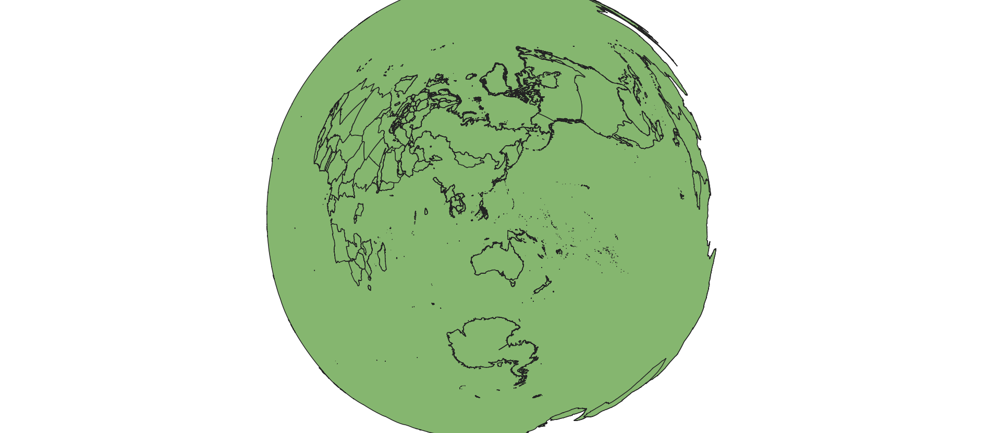

In this project I learned how to display images in different projections
Describe in your own words how you displayed the map in different projections using QGIS
You can write a paragraph here
WGS84 Projection
Some observations

Aitoff Projection
Some observations

Azimuthal Projection
Some observations

Sphere Winkel
Now, you should add the following projections on your own
EPSG: 3857, 53018, 54034, 54027, 102016, and two additional projections that you choose.
Download Natrual Earth 1:10m Cultural Vector